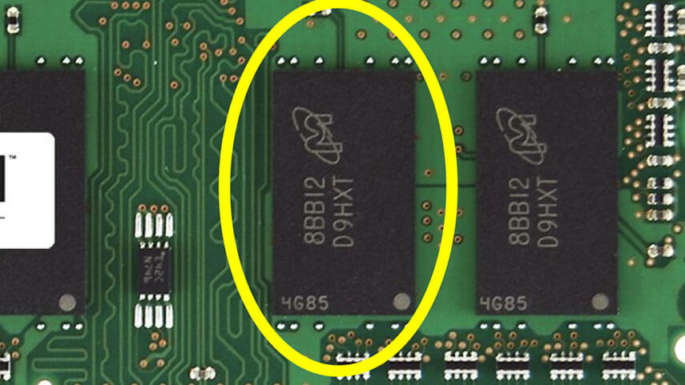
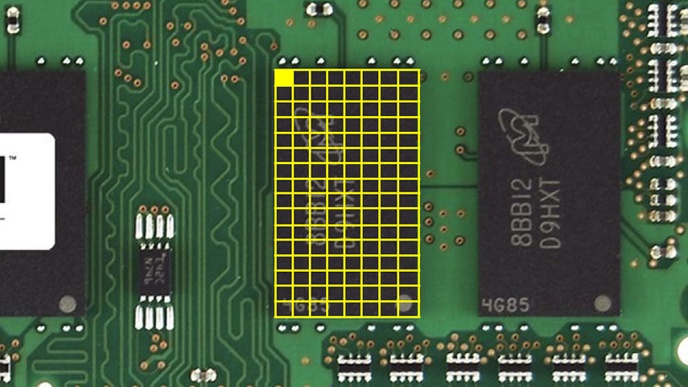
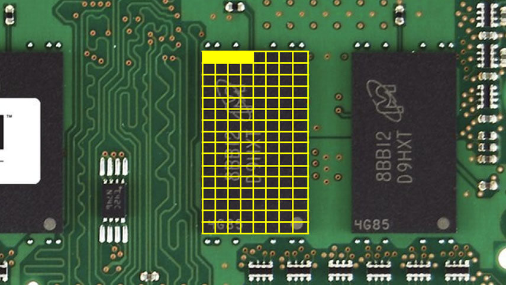

CS50x - Lecture 2 - Arrays.
compiling, arrays, storage, and more
Lecture 2 covers a lot of information more specific to the course itself than computer science. I'm going to try to hit all the main points so anyone can follow along.
Compiling
In CS50x, our cloud development environment is utilizing the clang compiler, or c language, with a handy little shorthand make. A compiler as we know, turns human-written source code into machine code, or binary, in 4 major steps:
- Preprocessing: this is where any header files, denoted by the # are copied and pasted into the file so the program can use them later
- Compiling: converts the source code into assembly code
- Assembling: converts assembly code into machine code
- Linking: the libraries you've included are also converted into machine code and linked, or combined, with your main file
A quick note on reverse engineering: it's technically possible to decompile code (proprietary code, since open-source is accessible to everyone), that is turn machine code back into source code, to reverse engineer a program. The amount of time and skill needed to do this is so high, the engineer could probably make a new program faster. So it's simply not practical to do.
Debugging
Sometimes... no, a lot of times the code compiles correctly, so there's no syntax errors, but doesn't run as expected, or do what we want. This is called a computer bug. Usually it's a flaw in the logic or you forgot to reset a variable that's used in a loop, etc. To fix these computer bugs there's a couple different options.
The quick and dirty way to debug a problem in your code is to add some printf( ) functions to "see what's going on" so to speak. printf is your friend. This is good in a pinch, or for simpler bugs, but can get messy really quick. Instead, CS50x also comes equipped with a debugger helper function debug50, that allows us to set a break point, or a line of code to pause at, and tell the computer to process our program line by line so we can see what's going on with the variables and environment.
Another good way, that has roots in computer science's canon, is called rubber ducky debugging. Rubber ducky debugging originates from a popular story in the 1999 book The Pragmatic Programmer. It works by explaining to a "rubber duck" on your desk what your code does, line by line. By reviewing and verbalizing your code, any flaws in the logic or difference in what it should do versus what it actually does should show up.
Memory
RAM - random access memory is storage that the computer can use immediately. You can think of memory in a computer as a grid of billions of bytes of memory. One billion bytes is one gigabyte. Your computer has a limited amount of memory, and each type of data takes up a certain amount of space, here is a list:
- bool - 1 byte
- int - 4 bytes
- long - 8 bytes
- float - 4 bytes
- double - 8 bytes
- char - 1 byte
- string - ? bytes
I hope no one gets upset if I steal the lecture slides, which make it easier to picture. Here's a memory chip on a computer's circuit board:
We can picture a char that takes up a single byte like this:
An int, which takes up 4 bytes of memory, might look like this:
Arrays
An array is a data structure made of a collection of elements of data that is stored contiguously in a computer's memory, that is, back-to-back. Each element in the array is the same size of memory, and can be accessed by an index or key.
For instance, an array of integers - int numbers[3] - would make an array of 3 numbers that can be accessed by their index, or location in the array. That would be numbers[0], numbers[1], and numbers[2]. Once again, remember that computers always start counting at 0. Storing data this way allows us to loop through an array to make calculations or modify the data.
A string is an array of characters. We can think of the string "hello", as the characters 'h' + 'e' + 'l' + 'l' + 'o' followed by a special sentinel value, NUL, which is a byte where all the bits are 0. NUL is represented by '\0'. Since a string can be any number of characters (within the limit of the computer's memory), we don't actually know how many bytes it takes up. When we're creating and accessing a string, we're actually just telling the computer where the first letter of the string is in the memory. We don't explicitly tell the computer when the string ends, like an int which is exactly 4 bytes, the string itself does that. When a computer is reading a string, it goes through character by character until it hits NUL, which tells it that the string is complete.
Characters and integers can also be interchanged. For example, using ASCII we see that 'A' = 65, and 'a' = 97. So by subtracting 32 from a lowercase character, we'd get the uppercase version. Of course, there's already a library called <string.h> that already has some very useful functions for string manipulation, including: strlen( ) to find the length of a string, toupper( ) or tolower( ) to convert characters to uppercase or lowercase, and strcmp( ) to compare two strings (which will be important later) to name a few.
On running programs
The final two notes in this lecture are on a couple of details related to computer programs, command-line arguments and exit statuses.
Command-line arguments are instructions for the program that are given at the command-line, when you execute your code. To allow your program to accept command-line arguments, you'd adjust the int main( ) function as follows:
int main(int argc, string argv[ ])
int argc is the argument count, or how many arguments are given.
string argv[ ] is an array of strings, where each string is an argument value.
And finally, every program returns an exit status when it's finished running. The default exit status is 0, which means the code ran correctly and there were no errors. Alternatively, any number of errors can be programmed into the code, so if something breaks, it could for example exit early by returning 1, thereby preventing something worse from happening and alerting the user what went wrong so they or the programmer can fix it.